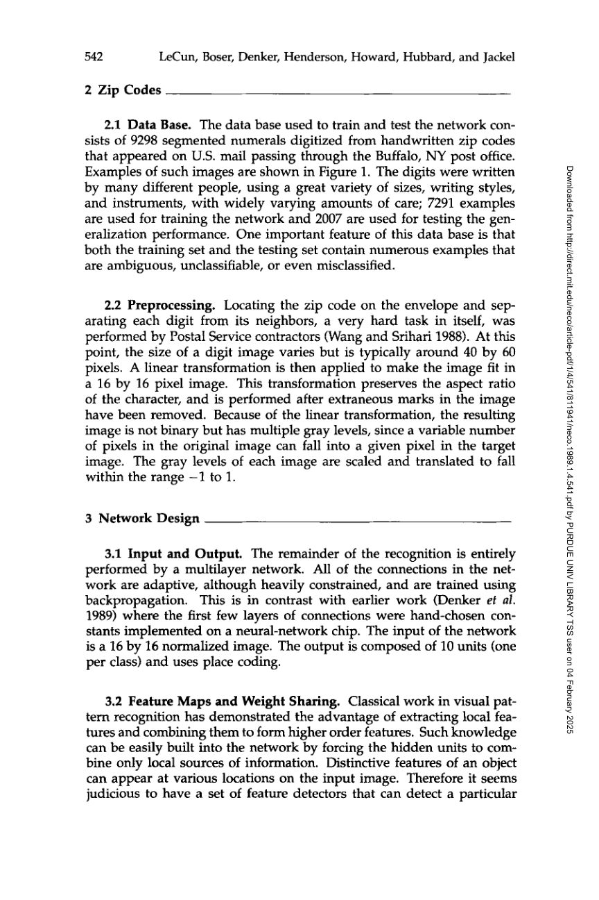
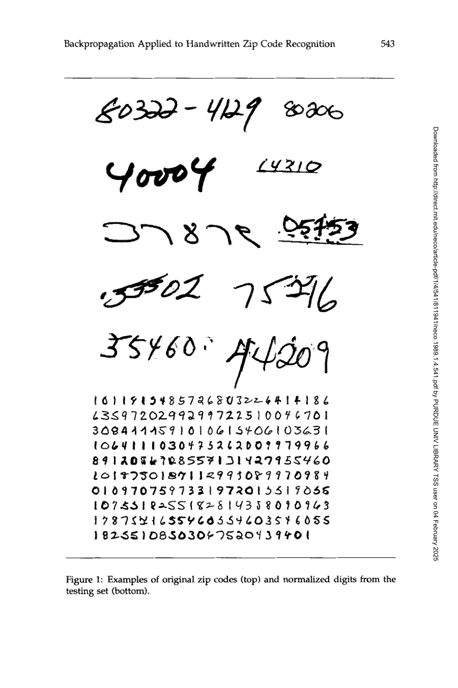
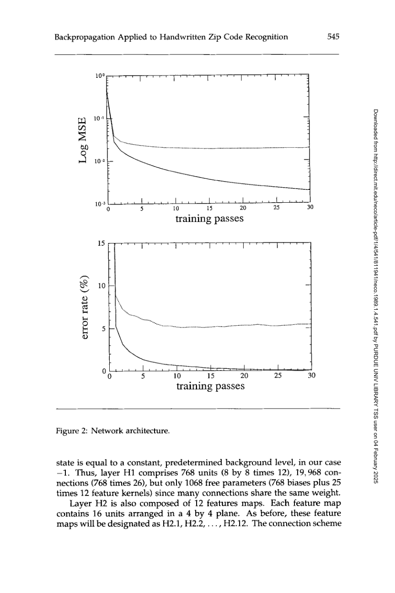
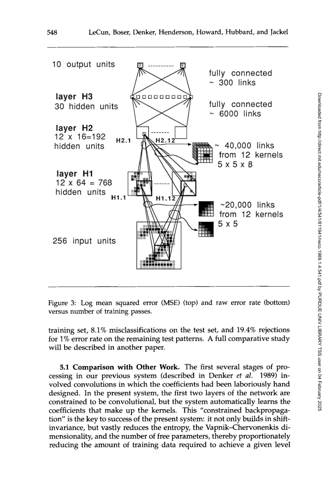

Backpropagation Applied to Handwritten Zip Code Recognition

| Architecture Type | Convolutional Neural Network (CNN) |
|---|---|
| Key Innovation | Local receptive fields, shared weights (convolutions), and spatial sub-sampling. |
| Performance Metric | 1% error rate on training data; 9% on difficult zip code testing data. |
| Computational Efficiency | Significant reduction in parameters compared to fully connected networks due to weight sharing. |
| Venue | Neural Computation |
| Year | 1989 |
| Citations | 11974 |
| DOI | Link |
gradient that is needed in the calculation of the weights to be used in the network.">backpropagation Applied to Handwritten Zip Code Recognition is a foundational paper by Yann LeCun and colleagues that demonstrated the practical utility of convolutional neural networks (cnns) for real-world pattern recognition. By training a multi-layer network directly on raw pixel images of handwritten digits from the U.S. Postal Service, the authors showed that local connection patterns and shared weights could automatically learn shift-invariant features. This work laid the groundwork for modern computer vision and proved that gradient that is needed in the calculation of the weights to be used in the network.">backpropagation could effectively train deep, constrained architectures.
Learning from Raw Pixels
Before this paper, most pattern recognition systems relied on complex, hand-engineered feature extractors followed by a separate classifier. LeCun argued that the feature extractor should be part of the learning process itself.
The proposed network takes a 16x16 pixel image as input and processes it through several layers of 'feature maps.' Each unit in a feature map is connected to a small local neighborhood in the previous layer, mimicking the receptive fields found in biological visual systems. This ensures that the model captures local spatial correlations before building up to higher-level representations.
Weight Sharing and Convolutions
A key innovation introduced in the paper is the concept of weight sharing. All units in a single feature map are constrained to use the same set of weights (a kernel), but applied at different locations. This operation is mathematically equivalent to a discrete convolution.
Weight sharing provides two major benefits: first, it drastically reduces the number of free parameters, making the model easier to train and less prone to overfitting. Second, it naturally implements 'shift invariance,' meaning the network can recognize a digit regardless of its exact position within the input frame.
Spatial Sub-sampling
To build robustness against small distortions and variations in the input, the network alternates between convolutional layers and sub-sampling layers. Each sub-sampling unit computes the average of a 2x2 neighborhood in the preceding feature map, then passes it through a non-linear activation.
This process reduces the spatial resolution of the feature maps while increasing the number of features being tracked. By the time the signal reaches the final fully connected layers, the network has extracted a high-level, low-resolution representation of the digit that is invariant to many common noise factors.
Experimental Results on Zip Codes
The authors tested their architecture on a dataset of 9,298 handwritten digits provided by the US Postal Service. The results were highly competitive for the time, achieving a 1% error rate on the training set.
On a particularly difficult test set of 7,291 digits, the network achieved a 9% error rate. This performance proved that neural networks could handle the 'garbage' and variability found in real-world data, leading to the deployment of similar systems for automated check and mail processing in the 1990s.
Concept Breakdown
A small region of the input image that a single neuron 'sees' and processes, allowing the model to capture local spatial features.
The technique of using the same weights for different neurons in a layer, which defines the convolutional operation and reduces parameter count.
A set of neurons that all detect the same feature (e.g., a vertical edge) but at different locations across the input.
The property of a system to recognize a pattern correctly even if its position in the input changes.
The process of reducing the resolution of a feature map by aggregating information from local clusters of units.
Mathematics
Unit Activation
| Symbol | Meaning |
|---|---|
| $w_{ij}$ | Shared weight between unit i and unit j |
| $b_j$ | Bias term for unit j |
| $f$ | Non-linear activation function (typically tanh in this paper) |
Figures and Explanations

Diagram of the multi-layer network architecture, showing the input layer, convolutional layers (H1, H2), sub-sampling layers, and final output.


